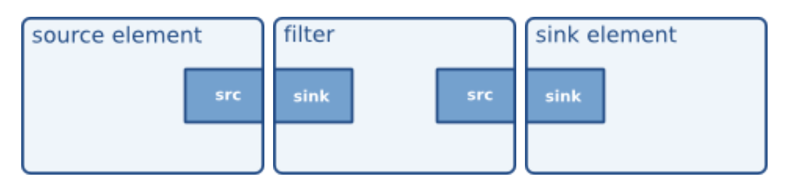
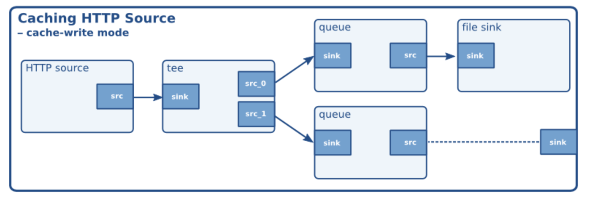

GStreamer
A short Introduction and beyond
Created by René Calles / @renecalles
Topics
- About GStreamer
- The GStreamer Slang
- Many ways to use it
- Need help?
- Is it all open-source?
About GStreamer
- Pipeline based Multimedia Framework
- Provides an Plugin Architecture
- Founded in 1999
- Written in C
- Play, Record, Stream, Mix ...
The GStreamer Slang
Sources, Sinks and Pads
- source pads produce data
- sink pads consume data
GstElement

- Abstract Base class for all elements
- e.g. demuxer, encoder, filer ...
- static/dynamic Pads
GstBin
- wraps multiple GstElements
- use ghostpads to communicate to outside elements
GstPipeline

- Top level GstBin
- provides GstClock/GstBus
- UPSTREAM >> Source >> DOWNSTREAM
Many ways to use it
gst-launch
gst-launch-1.0 playbin uri=file:///Users/reneVolution/Documents/sons.mp4
#!/bin/bash
STREAM="rtmp://cp121363.live.edgefcs.net/live/hr-fernsehen_1536@53002"
gst-launch-1.0 -v -e \
rtmpsrc location="$STREAM live=1" ! queue ! flvdemux name=demux \
demux.video ! decodebin ! videoconvert ! autovideosink \
demux.audio ! decodebin ! audioconvert ! autoaudiosink
C-API
#include
#include
int main(gint argc, gchar *argv[]) {
/* Init */
gst_init(&argc, &argv);
GMainLoop* loop = g_main_loop_new(NULL, FALSE);
GstElement* pipeline = gst_pipeline_new("player");
if (!pipeline) {
g_printerr("Pipeline could not be created. Exiting.\n");
return -1;
}
GstElement* player = gst_element_factory_make("playbin", "player");
g_object_set(G_OBJECT (player), "uri", "file:///Users/reneVolution/Documents/sons.mp4", NULL);
gst_bin_add(GST_BIN (pipeline), player);
/* run the pipeline */
g_print("Running...\n");
gst_element_set_state(pipeline, GST_STATE_PLAYING);
g_main_loop_run(loop);
return 0;
}
C++?
- Offcial Bindings outdated
- Do not invent another Gst++
- WebKit approach can be an inspiration
Python Bindings
import pygst
pygst.require("0.10")
import gst
pipeline = gst.Pipeline("player-pipeline")
player = gst.element_factory_make("playbin", "player")
pipeline.add(player)
player.set_property("uri", "file:///Users/reneVolution/Documents/sons.mp4")
# We can create graphviz dot files as well
# os.environ['GST_DEBUG_DUMP_DOT_DIR'] = '/tmp'
# Start Playback
pipeline.set_state(gst.STATE_PLAYING)
# Pause - to resume later from that point
pipeline.set_state(gst.STATE_PAUSE)
# Stop Playback
pipeline.set_state(gst.STATE_NULL)
Inspecting Elements
gst-inspect-1.0 playbin
Factory Details:
Rank none (0)
Long-name Player Bin 2
Klass Generic/Bin/Player
Description Autoplug and play media from an uri
Author Wim Taymans
Plugin Details:
Name playback
Description various playback elements
Filename /usr/local/lib/gstreamer-1.0/libgstplayback.so
Version 1.4.3
License LGPL
Source module gst-plugins-base
Source release date 2014-09-24
Binary package GStreamer Base Plug-ins source release
Origin URL Unknown package origin
GObject
+----GInitiallyUnowned
+----GstObject
+----GstElement
+----GstBin
+----GstPipeline
+----GstPlayBin
Implementierte Schnittstellen:
GstChildProxy
GstStreamVolume
GstVideoOverlay
GstNavigation
GstColorBalance
Pad Templates:
none
Element Flags:
no flags set
Bin Flags:
no flags set
Element Implementation:
Has change_state() function: gst_play_bin_change_state
Element has no clocking capabilities.
Element has no URI handling capabilities.
Pads:
none
Element Properties:
name : The name of the object
flags: lesbar, schreibbar
String. Default: "playbin0"
parent : The parent of the object
flags: lesbar, schreibbar
Object of type "GstObject"
async-handling : The bin will handle Asynchronous state changes
flags: lesbar, schreibbar
Boolean. Default: false
message-forward : Forwards all children messages
flags: lesbar, schreibbar
Boolean. Default: false
delay : Expected delay needed for elements to spin up to PLAYING in nanoseconds
flags: lesbar, schreibbar
Unsigned Integer64. Range: 0 - 18446744073709551615 Default: 0
auto-flush-bus : Whether to automatically flush the pipeline's bus when going from READY into NULL state
flags: lesbar, schreibbar
Boolean. Default: true
uri : URI of the media to play
flags: lesbar, schreibbar
String. Default: null
current-uri : The currently playing URI
flags: lesbar
String. Default: null
suburi : Optional URI of a subtitle
flags: lesbar, schreibbar
String. Default: null
current-suburi : The currently playing URI of a subtitle
flags: lesbar
String. Default: null
source : Source element
flags: lesbar
Object of type "GstElement"
flags : Flags to control behaviour
flags: lesbar, schreibbar
Flags "GstPlayFlags" Default: 0x00000617, "soft-colorbalance+deinterlace+soft-volume+text+audio+video"
(0x00000001): video - Render the video stream
(0x00000002): audio - Render the audio stream
(0x00000004): text - Render subtitles
(0x00000008): vis - Render visualisation when no video is present
(0x00000010): soft-volume - Use software volume
(0x00000020): native-audio - Only use native audio formats
(0x00000040): native-video - Only use native video formats
(0x00000080): download - Attempt progressive download buffering
(0x00000100): buffering - Buffer demuxed/parsed data
(0x00000200): deinterlace - Deinterlace video if necessary
(0x00000400): soft-colorbalance - Use software color balance
(0x00000800): force-filters - Force audio/video filter(s) to be applied
n-video : Total number of video streams
flags: lesbar
Integer. Range: 0 - 2147483647 Default: 0
current-video : Currently playing video stream (-1 = auto)
flags: lesbar, schreibbar
Integer. Range: -1 - 2147483647 Default: -1
n-audio : Total number of audio streams
flags: lesbar
Integer. Range: 0 - 2147483647 Default: 0
current-audio : Currently playing audio stream (-1 = auto)
flags: lesbar, schreibbar
Integer. Range: -1 - 2147483647 Default: -1
n-text : Total number of text streams
flags: lesbar
Integer. Range: 0 - 2147483647 Default: 0
current-text : Currently playing text stream (-1 = auto)
flags: lesbar, schreibbar
Integer. Range: -1 - 2147483647 Default: -1
subtitle-encoding : Encoding to assume if input subtitles are not in UTF-8 encoding. If not set, the GST_SUBTITLE_ENCODING environment variable will be checked for an encoding to use. If that is not set either, ISO-8859-15 will be assumed.
flags: lesbar, schreibbar
String. Default: null
audio-sink : the audio output element to use (NULL = default sink)
flags: lesbar, schreibbar
Object of type "GstElement"
video-sink : the video output element to use (NULL = default sink)
flags: lesbar, schreibbar
Object of type "GstElement"
vis-plugin : the visualization element to use (NULL = default)
flags: lesbar, schreibbar
Object of type "GstElement"
text-sink : the text output element to use (NULL = default subtitleoverlay)
flags: lesbar, schreibbar
Object of type "GstElement"
video-stream-combiner: Current video stream combiner (NULL = input-selector)
flags: lesbar, schreibbar
Object of type "GstElement"
audio-stream-combiner: Current audio stream combiner (NULL = input-selector)
flags: lesbar, schreibbar
Object of type "GstElement"
text-stream-combiner: Current text stream combiner (NULL = input-selector)
flags: lesbar, schreibbar
Object of type "GstElement"
volume : The audio volume, 1.0=100%
flags: lesbar, schreibbar
Double. Range: 0 - 10 Default: 1
mute : Mute the audio channel without changing the volume
flags: lesbar, schreibbar
Boolean. Default: false
sample : The last sample (NULL = no video available)
flags: lesbar
Boxed pointer of type "GstSample"
subtitle-font-desc : Pango font description of font to be used for subtitle rendering
flags: schreibbar
String. Default: null Write only
connection-speed : Network connection speed in kbps (0 = unknown)
flags: lesbar, schreibbar
Unsigned Integer64. Range: 0 - 18446744073709551 Default: 0
buffer-size : Buffer size when buffering network streams
flags: lesbar, schreibbar
Integer. Range: -1 - 2147483647 Default: -1
buffer-duration : Buffer duration when buffering network streams
flags: lesbar, schreibbar
Integer64. Range: -1 - 9223372036854775807 Default: -1
av-offset : The synchronisation offset between audio and video in nanoseconds
flags: lesbar, schreibbar
Integer64. Range: -9223372036854775808 - 9223372036854775807 Default: 0
ring-buffer-max-size: Max. amount of data in the ring buffer (bytes, 0 = ring buffer disabled)
flags: lesbar, schreibbar
Unsigned Integer64. Range: 0 - 4294967295 Default: 0
force-aspect-ratio : When enabled, scaling will respect original aspect ratio
flags: lesbar, schreibbar
Boolean. Default: true
audio-filter : the audio filter(s) to apply, if possible
flags: lesbar, schreibbar
Object of type "GstElement"
video-filter : the video filter(s) to apply, if possible
flags: lesbar, schreibbar
Object of type "GstElement"
Element Signals:
"about-to-finish" : void user_function (GstElement* object,
gpointer user_data);
"video-changed" : void user_function (GstElement* object,
gpointer user_data);
"audio-changed" : void user_function (GstElement* object,
gpointer user_data);
"text-changed" : void user_function (GstElement* object,
gpointer user_data);
"video-tags-changed" : void user_function (GstElement* object,
gint arg0,
gpointer user_data);
"audio-tags-changed" : void user_function (GstElement* object,
gint arg0,
gpointer user_data);
"text-tags-changed" : void user_function (GstElement* object,
gint arg0,
gpointer user_data);
"source-setup" : void user_function (GstElement* object,
GstElement* arg0,
gpointer user_data);
Element Actions:
"get-video-tags" : GstTagList * user_function (GstElement* object,
gint arg0);
"get-audio-tags" : GstTagList * user_function (GstElement* object,
gint arg0);
"get-text-tags" : GstTagList * user_function (GstElement* object,
gint arg0);
"convert-sample" : GstSample * user_function (GstElement* object,
GstCaps* arg0);
"get-video-pad" : GstPad * user_function (GstElement* object,
gint arg0);
"get-audio-pad" : GstPad * user_function (GstElement* object,
gint arg0);
"get-text-pad" : GstPad * user_function (GstElement* object,
gint arg0);
Children:
playsink
Debugging your code
export GST_DEBUG_DUMP_DOT_DIR=$PWD
gst-launch-1.0 playbin uri=file:///Users/reneVolution/Documents/sons.mp4
dot Tpng [gst-dotfile name] > ${image}.png
export GST_DEBUG=5
export GST_DEBUG=oggdemux:5
Need help?
Ask the community
- RTFM => http://gstreamer.freedesktop.org/documentation/
- See GStreamer SDK Tutorials (http://docs.gstreamer.com/display/GstSDK/Tutorials)
- Subscribe to the Mailinglist: http://lists.freedesktop.org/mailman/listinfo/gstreamer-devel
Professional Support
- Centricular
- Collabora
- Fluendo
Is it all open-source?
- Core => LPGL
- Core/Good Plugins => LGPL
- Bad Plugins
GStreamer Bad Plug-ins comprises a set of plug-ins not up-to-par compared to the rest. They might closely approach good-quality plug-ins, but they lack something: perhaps a good code review, some documentation, a set of tests, a real live maintainer, or some actual wide use. - Ugly Plugins
This package contains plug-ins from the "ugly" set, a set of good-quality plug-ins that might pose distribution problems.